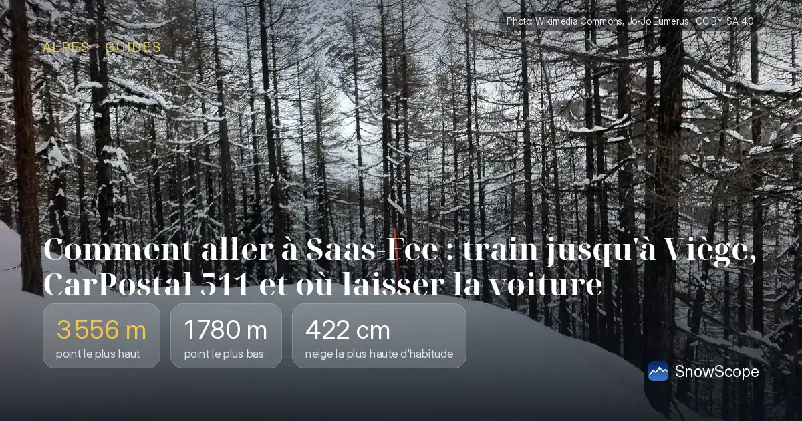

Comment aller à Saas-Fee : train jusqu'à Viège, CarPostal 511 et où laisser la voiture
Saas Fee est une station sans voitures à 1 780 m entourée de 13 pics au-dessus de 4 000 m, ceinturée par quatre cols de montagne qui façonnent votre arrivée. Que vous veniez en train et en bus ou en voiture personnelle, le dernier tronçon se fait toujours à pied ou en navette villageoise gratuite une fois arrivé au fond de la vallée.
Consultez les prévisions neige en temps réel pour Saas Fee sur l'application SnowScopeHauteurs de neige, alertes poudreuse et carte 3D, gratuitement.
Train et bus : l'itinéraire le plus rapide depuis la plupart des aéroports
Depuis les aéroports de Zurich, Genève, Bâle et Milan, les trains descendent jusqu'à Visp dans la vallée du Rhône. Ce trajet dure environ deux heures et demie depuis Zurich. À la gare de Visp, le bus PostBus 511 part toutes les 30 minutes en direction du sud dans la vallée de Saas et jusqu'à Saas Fee. Le voyage complet depuis un grand aéroport dure environ trois heures.
Les Chemins de fer fédéraux suisses vendent des billets Supersaver à prix réduit si vous réservez à l'avance. Une fois arrivé à la gare routière de Saas Fee, le village est assez petit pour être parcouru à pied, et les remontées jusqu'aux remontées mécaniques sont gratuites pour tous les passagers.
Accès en voiture : quatre cols, une route de vallée
Si vous conduisez, quatre itinéraires mènent à Visp puis au sud jusqu'à Saas Fee. Du nord via Berne, le train auto du Lötschberg achemine les véhicules à travers la montagne, avec des trains partant jusqu'à six fois par heure dans chaque direction. De l'est, le col de la Furka offre un itinéraire en route ouverte. Du sud et de l'Italie, le col du Simplon se connecte à la vallée du Rhône. De l'ouest, la route de vallée longe le Rhône via Lausanne et descend jusqu'à Visp.
Au sud de Visp, suivez les panneaux vers Saas-Almagell. Au carrefour Killerhof près de Stalden, prenez la deuxième sortie vers Saas Fee. À Saas-Grund, tournez à droite après l'église et montez dans la vallée de Saas. La route se rétrécit en serpentant vers le haut.

Stationnez à l'entrée, puis circulez gratuitement à l'intérieur
Aucune voiture privée n'entre à Saas Fee. De grands parkings sont situés à l'entrée du village. L'office du tourisme publie des informations détaillées sur le stationnement et les mises à jour sur les fermetures temporaires dues à la neige ou aux travaux. Les chaînes d'information locale affichent également des alertes sur l'accès.
Une fois garé, utilisez les bus locaux gratuits et les navettes de ski. Ceux-ci comprennent des arrêts à la remontée mécanique Alpin Express, à la gare routière, au parking multi-étages et au parking nord. Pendant la pré-saison (31 octobre au 18 décembre 2026), et à nouveau du 19 décembre 2026 au 18 avril 2027, des e-bus relient également les villages voisins comme Saas-Grund et Saas-Almagell directement à Saas Fee. Les autres bus de vallée sont payants sauf si vous possédez une SaastalCard.
Ce que les chiffres montrent : un long et profond hiver
Sur 46 hivers passés, Saas Fee à hauteur mi-montagne (2 668 m) a enregistré un pic de saison moyen de 178 cm, avec de la neige au sol pendant environ 260 jours chaque hiver. La neige la plus profonde tombe généralement en mars. À la base (1 780 m), les chiffres sont plus bas : un pic typique de 92 cm et 228 jours de neige, avec le plus de neige souvent en février.
Les élévations les plus hautes, autour de 3 556 m, racontent une histoire différente. Là, la profondeur de neige médiane atteint 422 cm, et la neige arrive souvent fin septembre et persiste jusqu'à début juillet. Cet avantage d'altitude explique pourquoi la station conserve la neige le plus longtemps au printemps et en début d'été.
Retards météorologiques : planifiez votre temps de trajet avec soin
Le Lötschberg, la Furka et le Simplon peuvent fermer en cas de neige abondante ou de risque d'avalanche. Si vous conduisez, prévoyez du temps pour les retards et vérifiez l'état des routes avant le départ et à nouveau avant de redescendre. La même chose s'applique au PostBus 511 : les tempêtes hivernales peuvent ralentir le trajet, prévoyer donc du temps supplémentaire et disposer d'un réservoir plein ou d'une batterie chargée.
Les lois sur les pneus d'hiver s'appliquent sur les quatre cols et leurs approches. Vérifiez votre indice de pneu et la profondeur des sculptures avant de partir, surtout si vous louez une voiture. La vallée et le village lui-même sont normalement accessibles, mais le déneigement est une tâche constante à cette altitude.
Meilleur moment d'arrivée et ce qu'il faut apporter
Novembre est le début de la saison ; la neige à la base est encore en augmentation (les hivers passés montrent un typique 13 cm à mi-novembre). Mi-montagne et les pentes supérieures en contiennent plus, mais les conditions peuvent être insuffisantes et variables. En décembre, la base a généralement 35 cm, et les pentes supérieures 150 cm, ce qui rend la station plus fiable. Janvier à mars offrent la neige la plus profonde et la plus stable.
Que vous voyagiez en train ou en voiture, apportez des couches chaudes, une protection solaire et une gourde. Si vous conduisez, emportez des provisions pour la journée : carburant, eau et en-cas. Le trajet n'est pas long, mais la météo en montagne change rapidement et vous pouvez être retardé.
Conseils aux skieurs
- Vous prenez le train ? Achetez votre billet jusqu'à Saas Fee sur le site SBB et montez directement dans le PostBus 511 à la gare de Visp sans changer de quai.
- Vous conduisez le train auto du Lötschberg en hiver ? Vérifiez les temps d'attente et réservez un créneau à l'avance sur le site BLS pour éviter les retards.
- Laissez votre voiture aux parkings d'entrée pour tout le séjour. Les bus gratuits à l'intérieur du village et jusqu'aux remontées mécaniques rendent un deuxième trajet en ville inutile et vous font économiser sur le stationnement.
- Les pneus d'hiver sont obligatoires sur les quatre cols de montagne de novembre à avril. Si vous louez, confirmez que votre voiture a des pneus d'hiver homologués 3PMSF sur les quatre roues ou ayez des chaînes et des chaussettes à neige.
- Hors-piste et tours sur glacier : consultez le dernier bulletin d'avalanche SLF sur slf.ch et engagez toujours un guide de montagne qualifié.
À propos de ces chiffres
Les hauteurs de neige des stations sont la neige la plus épaisse sur le haut du domaine à la date indiquée ; ce sont des estimations pour une zone, pas une mesure en un point. Les prévisions peuvent changer. Consultez toujours le bulletin d'avalanche officiel avant le hors-piste.
Bulletins d'avalanche officiels: WSL-SLF
Citer ce bulletin
Pour la recherche, l'enseignement ou la presse : chiffres et graphiques réutilisables librement sous CC BY 4.0 avec cette citation.
SnowScope (2026), Comment aller à Saas-Fee : train jusqu'à Viège, CarPostal 511 et où laisser la voiture, https://snowscope.app/blog/fr/2026/11/how-to-get-to-saas-fee-train-postbus-car-free.html, consulté le 2026-11-09
SnowScope (Atlas Labs). (2026, November 9). Comment aller à Saas-Fee : train jusqu'à Viège, CarPostal 511 et où laisser la voiture. SnowScope snow reports. https://snowscope.app/blog/fr/2026/11/how-to-get-to-saas-fee-train-postbus-car-free.html
BibTeX
@misc{snowscope2026howtogettosaasfeetrainpo,
author = {{SnowScope (Atlas Labs)}},
title = {Comment aller à Saas-Fee : train jusqu'à Viège, CarPostal 511 et où laisser la voiture},
year = {2026},
month = nov,
howpublished = {\url{https://snowscope.app/blog/fr/2026/11/how-to-get-to-saas-fee-train-postbus-car-free.html}},
note = {Published 2026-11-09 14:31 UTC; accessed 2026-11-09}
}· CC BY 4.0 · Méthodes, données et outils →
Saas Fee : neige et température selon l'altitude, cet hiver vs l'hiver dernier (outils) →
Suivre Saas Fee
Gratuit : un message quand la neige arrive, et la météo chaque matin.
Autres bulletins neige

Cortina d'Ampezzo de trois façons : Tofana, Faloria-Cristallo et Cinque Torri-Lagazuoi, avec 46 hivers de données de neige à trois altitudes.

Bonneval-sur-Arc se situe à 1 794 m dans la haute vallée de l'Arc, fermée par l'Iseran en hiver. L'épaisseur de neige varie de 99 cm en bas à 335 cm au sommet. Données de 46 hivers passés, novembre 2026.